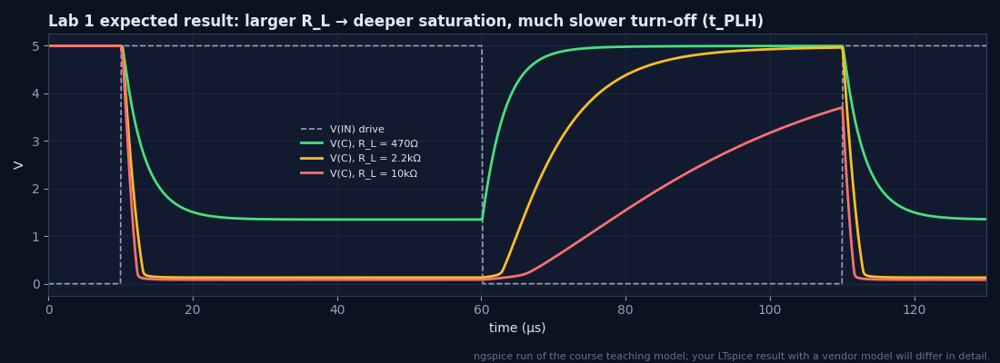
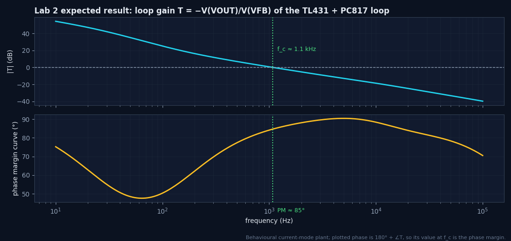
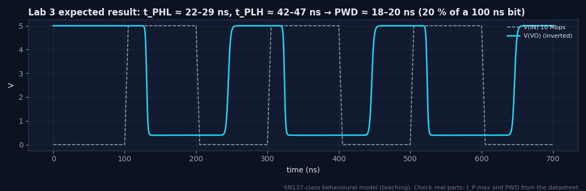
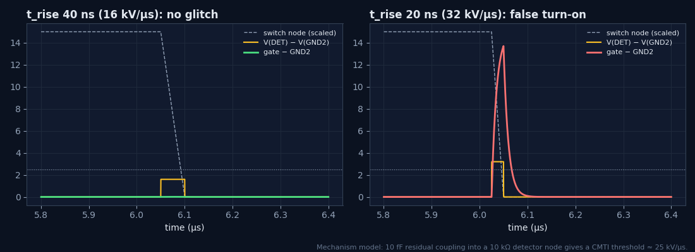
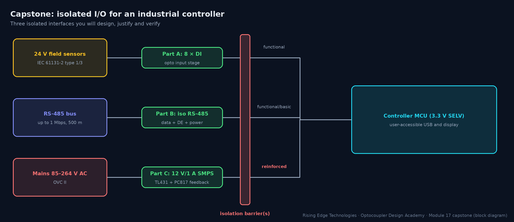

Interactive Labs and Case Studies
The capstone: hands-on design exercises with checked answers, LTspice simulation labs for every major circuit from the course, PCB review exercises on real layouts, field-failure troubleshooting scenarios, component selection challenges, and a final capstone project integrating everything.
Illustrations and animations are original teaching drawings, not to scale. Values marked representative are typical of common parts; always confirm against the current datasheet or standard you design to.
Six kinds of activity, each practising a different engineering skill:
| Section | Activity | Skill | Time |
|---|---|---|---|
| 2 | Design exercises (10, auto-checked) | Calculations with worst-case values | 40 min |
| 3 | LTspice labs (5) | Simulation, reading waveforms and Bode plots | 60–90 min |
| 4 | PCB review (3 layouts) | Spotting creepage, slot and bypass errors | 20 min |
| 5 | Troubleshooting stories (5) | Systematic field-failure investigation | 30 min |
| 6 | Selection challenges (3) | Choosing and justifying parts | 15 min |
| 7 | Capstone project | Complete isolated I/O design with self-assessment | 3–6 h |
Enter your answers. Each is checked against the reference within the stated tolerance; the solution explains the method. The module tag tells you where the topic is taught.
0 / 10 exercises solved
Copy each netlist into a new LTspice schematic’s netlist file (File → New Schematic, then paste into a .cir file and open it), run, and compare with the expected results. The teaching models are behavioural and deliberately simple; the trends match real parts.
OPTO_PT/OPTO_HS directly: keep the pin order A, K, C, E (or A, K, VO, VCC, GND) or edit the instance line. Many vendor models are encrypted or only valid at 25 °C, so don’t use them to predict ageing or temperature drift: use the margin methods of Module 9.Lab 1 — PC817 switching speed vs RL
Objective. See how the load resistor sets turn-off time through saturation and Miller capacitance (Modules 4, 6).
* Lab 1: PC817-class switching vs load resistor
V1 IN 0 PULSE(0 5 10u 100n 100n 50u 100u)
R1 IN A 680
X1 A 0 C 0 OPTO_PT
VCC VCC 0 5
RL VCC C {RL}
.param RL=2.2k
.step param RL list 470 2.2k 10k
.tran 0 300u 0 50n
.meas tran tPHL TRIG V(IN) VAL=2.5 RISE=1 TARG V(C) VAL=2.5 FALL=1
.meas tran tPLH TRIG V(IN) VAL=2.5 FALL=1 TARG V(C) VAL=2.5 RISE=1
* Teaching phototransistor coupler (PC817-class behaviour, NOT a vendor model)
.subckt OPTO_PT A K C E
D1 A N1 DLED
VS N1 K 0
F1 C B VS 0.004
Q1 C B E QPT
.model DLED D(Is=1e-14 N=1.8 Rs=1.5 Cjo=30p BV=6)
.model QPT NPN(Bf=350 Is=1e-14 Cjc=12p Cje=8p Tf=5n Tr=2u Vaf=80 Rb=100)
.ends OPTO_PT
.endWhat to measure. Plot V(IN) and V(C). Read the .meas results in the SPICE error log (View → SPICE Error Log).
| RL | tPHL | tPLH | V(C) low |
|---|---|---|---|
| 470 Ω | 3.7 µs | 1.2 µs | 1.35 V (not saturated) |
| 2.2 kΩ | 1.4 µs | 8.9 µs | 0.13 V |
| 10 kΩ | 1.1 µs | 30 µs | 0.08 V |

Why is tPLH 25× longer at 10 kΩ than at 470 Ω?
Deep saturation stores charge in the base, and the Miller capacitance CCB is charged through RL: τ ≈ hFE·CCB·RL (Module 4).
Why does 470 Ω fail as a logic output?
IC needed = 5 V/470 Ω ≈ 10.6 mA but CTR × IF ≈ 7.7 mA, so the output only reaches 1.35 V, which is not a valid LOW for many inputs.
How would a 100 kΩ RBE (base-emitter) change tPLH?
It removes stored base charge faster (the model has no base pin: add it as a resistor from B to E inside the subcircuit to try).
Lab 2 — TL431 + PC817 loop Bode plot
Objective. Measure the crossover frequency and phase margin of an isolated SMPS feedback loop (Module 10, Example 4).
* Lab 2: TL431 + PC817 feedback loop, loop gain via voltage injection
VREF5 V5 0 5
RPU V5 COMP 4.7k
CCOMP COMP 0 1n
X1 LA LK COMP 0 OPTO_PT
* averaged current-mode flyback: Iout = 0.5 A/V * (V(COMP) - 0.8 V)
BPS 0 VOUT I=max(0, 0.5*(V(COMP)-0.8))
COUT VOUT CE 470u
RESR CE 0 50m
RLOAD VOUT 0 12
* loop break: inject between VOUT (x) and VFB (y)
VINJ VFB VOUT 0 AC 1
RLED VFB LA 1k
RBIAS LA LK 1k
RUP VFB REF 38.3k
RDN REF 0 10k
* behavioural TL431 (cathode sink current, needs K above ~2.5 V)
BTL LK 0 I=max(0, 5*(V(REF)-2.495))*(1/(1+exp(-(V(LK)-2.6)*20)))
RZ LK NZ 10k
CZ NZ REF 22n
CP LK REF 1n
.ac dec 50 10 100k
.meas AC fc WHEN mag(-V(VOUT)/V(VFB))=1
.meas AC phT FIND ph(-V(VOUT)/V(VFB)) AT fc
* Teaching phototransistor coupler (PC817-class behaviour, NOT a vendor model)
.subckt OPTO_PT A K C E
D1 A N1 DLED
VS N1 K 0
F1 C B VS 0.004
Q1 C B E QPT
.model DLED D(Is=1e-14 N=1.8 Rs=1.5 Cjo=30p BV=6)
.model QPT NPN(Bf=350 Is=1e-14 Cjc=12p Cje=8p Tf=5n Tr=2u Vaf=80 Rb=100)
.ends OPTO_PT
.endWhat to measure. Plot the expression -V(VOUT)/V(VFB). Phase margin = 180° + phT. Check the operating point first: V(VOUT) ≈ 12.05 V, V(REF) ≈ 2.495 V.
| Quantity | Expected |
|---|---|
| Crossover fc | ≈ 1.1 kHz |
| Phase margin | ≈ 85° |
| Gain at 100 Hz | ≈ 25 dB |

Halve CTR (edit 0.004 → 0.002 in F1). What happens to fc?
Loop gain falls about 6 dB, so fc drops roughly by half. That is why the loop must be stable at end-of-life CTR too (Module 9).
Increase CCOMP to 10 nF. Why does phase margin change?
CCOMP with RPU forms the opto pole (f = 1/2πRPUC); moving it down towards fc adds phase lag.
What does RBIAS do?
It keeps ≥ 1 mA in the TL431 even when the LED current is small (TL431 minimum cathode current).
Lab 3 — 6N137 UART at speed
Objective. Measure propagation delays and pulse-width distortion versus baud rate (Modules 6, 10).
* Lab 3: 6N137-class coupler on a UART line
.param baud=10e6
V1 IN 0 PULSE(0 5 100n 5n 5n {1/baud-5n} {2/baud})
RIN IN A 330
X1 A 0 VO VCC 0 OPTO_HS
VCC VCC 0 5
RL VCC VO 350
CL VO 0 15p
.step param baud list 1e6 5e6 10e6 20e6
.tran 0 {6/baud+100n} 0 0.2n
.meas tran tPHL TRIG V(IN) VAL=2.5 RISE=2 TARG V(VO) VAL=1.5 FALL=2
.meas tran tPLH TRIG V(IN) VAL=2.5 FALL=2 TARG V(VO) VAL=1.5 RISE=2
.meas tran PWD PARAM abs(tPHL-tPLH)
* Teaching high-speed logic coupler (6N137-class behaviour, NOT a vendor model)
.subckt OPTO_HS A K VO VCC GND
D1 A N1 DLED
VS N1 K 0
CLED A K 40p
H1 PD GND VS 500
BD PD PDF I=(V(PD)-V(PDF))/(2500-500*tanh(10*(V(PD)-V(PDF))))
C2 PDF GND 20p
BOUT X GND V=V(VCC,GND)*0.5*(1-tanh(8*(V(PDF,GND)-2.5)))
RO X VO 30
.model DLED D(Is=1e-14 N=1.8 Rs=2)
.ends OPTO_HS
.endWhat to measure. Plot V(IN) and V(VO) (inverted). Compare PWD with the bit time 1/baud.
| Baud | tPHL | tPLH | PWD / bit |
|---|---|---|---|
| 1 M | 29 ns | 47 ns | 18 ns / 1000 ns (1.8 %) |
| 10 M | 22 ns | 42 ns | 20 ns / 100 ns (20 %) |
| 20 M | 16 ns | 31 ns | 15 ns / 50 ns (29 %) |

Why do the delays shrink at 20 Mbaud?
The internal node no longer settles fully between bits: pattern-dependent timing (inter-symbol interference), which is worse than a fixed delay.
Raise RL to 1 kΩ. What happens to tPLH?
The output rise is slower (RL·CL grows), so tPLH and PWD increase. Size the pull-up for the baud rate (Module 10).
What PWD budget would you accept?
Typically ≤ 10–15 % of the bit for a UART sampling at mid-bit; > 20 % is marginal.
Lab 4 — IL300 linear transfer
Objective. Verify Vout = K3·(R2/R1)·Vin and see how K3 error appears (Module 5).
* Lab 4: IL300-class servo-linear coupler (behavioural)
.param K1=0.007 K3=1.0 R1=80k R2=80k
VIN IN 0 DC 1
RIN IN SUM {R1}
EAMP AO 0 SUM 0 1e5
ROA AO AOR 10
RLED AOR A 100
D1 A N1 DLED
VS N1 0 0
F1 SUM 0 VS {K1}
CSUM SUM 0 10p
F2 0 PO VS {K1*K3}
ROUT PO 0 {R2}
.model DLED D(Is=1e-14 N=1.8 Rs=2)
.dc VIN 0 5 0.5
.step param K3 list 0.9 1.0 1.1
.endWhat to measure. Plot V(PO) vs V(IN) and I(VS). The servo sets ILED = Vin/(K1·R1).
| K3 | Vout at Vin = 5 V | ILED at 5 V |
|---|---|---|
| 0.9 | 4.50 V | 8.9 mA |
| 1.0 | 5.00 V | 8.9 mA |
| 1.1 | 5.50 V | 8.9 mA |
Why does ILED not depend on K3?
The servo loop closes around the input photodiode (K1) only. K3 affects the output side, which is why it appears directly as a gain error.
What happens for negative Vin?
The LED cannot carry negative current: the circuit is unipolar. Add an offset (bias current) for bipolar signals.
How do you remove the K3 tolerance?
Trim R2, or calibrate the gain in firmware; K3 drift over temperature remains (Module 14 instrumentation example).
Lab 5 — Gate driver under a common-mode step
Objective. Watch how a fast switch-node edge couples into the detector and causes false turn-on: the mechanism behind CMTI (Modules 6, 14).
* Lab 5: CMTI mechanism in a gate-drive coupler (behavioural)
.param trise=20n
VIN IN 0 0
RIN IN A 1k
D1 A N1 DLED
VS N1 0 0
* 800 V switch-node step; dV/dt(10-90 %) = 0.8*800/trise
VCM GND2 0 PULSE(0 800 1u {trise/0.8} {trise/0.8} 5u 20u)
F1 GND2 DET VS 0.5
RDET DET GND2 10k
* residual coupling from GND1 into the detector node (shield leaves ~10 fF)
CPAR 0 DET 10f
BOUT GO GND2 V=7.5*(1+tanh(4*(V(DET,GND2)-2.5)))
RG GO GATE 10
CG GATE GND2 1n
.model DLED D(Is=1e-14 N=1.8 Rs=2)
.step param trise list 100n 40n 20n 10n
.tran 0 9u 0 1n
.meas tran VGmax MAX V(GATE,GND2) FROM 5.5u TO 8u
.endWhat to measure. The LED is OFF (input LOW), so the gate must stay at 0 V. Plot V(GATE,GND2) and V(DET,GND2) around the falling edge at ~6 µs.
| trise | dV/dt | Peak V(DET) − GND2 | Gate glitch |
|---|---|---|---|
| 100 ns | 6.4 kV/µs | 0.64 V | none |
| 40 ns | 16 kV/µs | 1.6 V | none |
| 20 ns | 32 kV/µs | 3.2 V | 13.7 V — false turn-on |
| 10 ns | 64 kV/µs | 6.4 V | false turn-on |

What CMTI does this model have?
Threshold 2.5 V / (10 kΩ × 10 fF) = 25 kV/µs: the glitch appears between 16 and 32 kV/µs.
Which two design changes raise it?
A better internal shield (smaller CPAR) and a lower-impedance detector node (smaller RDET): exactly what high-CMTI parts do.
Why does the glitch occur on the falling edge only?
The coupled current’s polarity pushes DET positive only for one edge direction; with the LED ON, the opposite edge would cause a false turn-off. Test both (Module 13).
Each layout hides three defects. Click (or tap) where you see a problem: green circles mark real defects, red crosses are false flags. Grid: 1 square = 2 mm. The red band is the required barrier keep-out. Reveal shows what you missed.
Keyboard users: the drop-down lists candidate locations (including correct ones and decoys) and flags them exactly like a click. Spacing rules are covered in Module 11.
Five field failures told as stories. At each step choose the next action: the best move scores 2, a reasonable one 1. The root cause and fix appear at the end.
Pick one part from the mini-catalogue for each brief. Scoring: 3 = best, 1 = workable, 0 = unsuitable. Specs are representative class values.
Selection score: 0 / 9
Brief. You are the isolation engineer for a compact industrial controller (DIN-rail, −25…+60 °C, 3000 m altitude, 10-year life, pollution degree 2). Design three interfaces:

| Part | Requirement |
|---|---|
| A — 8 digital inputs | IEC 61131-2 type 1 (ON 15–30 V, 2–15 mA; OFF ≤ 5 V), reverse-polarity tolerant, 1 ms response, CTR budget for 10 years, functional isolation to logic |
| B — RS-485 | 1 Mbps half-duplex, DE control, 500 m cable, isolated bus power, surge-protected |
| C — 12 V / 1 A flyback feedback | 85–264 V AC input, TL431 + optocoupler, reinforced insulation to SELV, loop PM ≥ 45° over CTR life |
Deliverables
Self-assessment rubric
| Criterion | Modules | Score (0–3) |
|---|---|---|
| Requirements captured and quantified | 1, 8 | |
| Insulation diagram and barrier table correct | 11, 16 | |
| Worst-case calculations (currents, CTR EOL, power) | 6, 9, 10 | |
| Part selection justified against two alternatives | 8, 15 | |
| Layout and creepage plan (incl. altitude) | 11 | |
| Verification plan with numeric pass criteria | 13 | |
| Clarity of the design-review package | 17 |
Part A (per input). Series string: reverse-polarity diode (0.7 V) + 5.1 V zener (sets the OFF threshold: no current at ≤ 5 V) + R = 3.9 kΩ (2 × 1.96 kΩ in series for creepage and single-fault tolerance) + PC817 rank C LED. At 15 V: IF = (15 − 0.7 − 5.1 − 1.15)/3.9 k = 2.06 mA (≥ 2 mA ✓). At 30 V: 5.9 mA (≤ 15 mA ✓), PR = 0.14 W total. CTREOL = 200 % × 0.6 (2 mA) × 0.8 (60 °C) × 0.5 (10 years) = 48 % → IC ≥ 0.99 mA; 10 kΩ pull-up to 3.3 V needs 0.29 mA: margin 3.4×. Response ≈ 50–100 µs ✓ (1 ms). Add 1 nF across the input and a Schmitt-trigger MCU pin.
Part B. Isolated RS-485 transceiver, or a 3-channel digital isolator (TX, RX, DE) + transceiver: at 1 Mbps a 6N137-class coupler (PWD ~20–35 ns = 2–4 % of a bit) would also work but needs three parts and ~45 mA. Isolated 5 V/200 mW DC-DC for the bus side. TVS (SM712 class) + optional GDT to earth for surges; 120 Ω termination and fail-safe bias. Isolation class: functional/basic (bus is SELV but may see ground potential differences of hundreds of volts).
Part C. Divider 38.3 kΩ/10 kΩ → 12.05 V; RLED 1 kΩ, RBIAS 1 kΩ (≥ 1 mA TL431). Coupler: reinforced per IEC 60747-5-5, VIORM ≥ 373 Vpk (264 V × √2), UL 1577 VISO ≥ 5 kVrms, wide-lead package so the footprint keeps the creepage required by IEC 62368-1 for reinforced insulation, and clearance × 1.14 for 3000 m. Loop: fc ≈ 1 kHz, PM ≈ 85° at nominal CTR (Lab 2); verify PM ≥ 45° from 0.4× to 2× nominal CTR.
Verification. Hi-Pot type test (reinforced, 60 s) after damp heat; routine 1 s; IR at 500 V DC; input threshold test at 15 V/5 V and 60 °C; RS-485 EFT ±1 kV and surge ±1 kV criterion B; loop-gain measurement on three boards; thermal survey at 60 °C (Module 13).
Your course progress. Completion is recorded when you use each module’s Next button or tick Mark as complete; finishing this page with Back to Course Home records Module 17 and completes the course.
Calculate
Worst-case numbers, not typicals, at every threshold.
Simulate
Use SPICE for trends and loops; margins come from datasheets and Module 9.
Review
Creepage, slots and bypassing are checked on the layout, not the schematic.
Investigate
Data before fixes; separate ageing, design and process causes.
Select
Match function first, then speed, CMTI, insulation and cost.
Document
Insulation diagram, barrier table, calculations and test plan make the design reviewable.
Design checklist
Tick items as you review a design. Your ticks are saved in this browser only; use your browser’s print function for a sign-off copy.
Four parts: multiple choice, true/false, a matching exercise and engineering scenarios. Score 80 % on the multiple choice to pass the module.